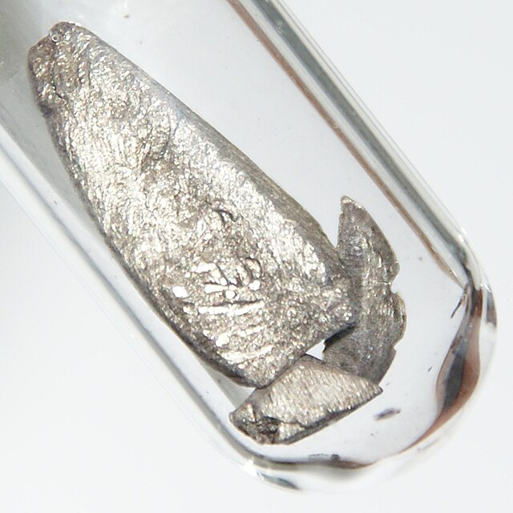

Europio (Eu)
- Nome elemento:
- Europio
- Simbolo:
- Eu
- Massa atomica:
- 151.96 u
La massa atomica dell'europio è 151.96 u.
- Numero atomico:
- 63
Il numero atomico dell'europio è 63.
- Numero di isotopi:
- 21
- Temperatura di fusione:
- 822 °C
La temperatura di fusione dell'europio è 822°C.
- Temperatura di ebollizione:
- 1529 °C
La temperatura di ebollizione dell'europio è 1529°C.
- Densità:
- 5.264 g/cm³
La densità dell'europio è 5.264 g/cm³.
- Elettronegatività:
- 1.2 (Scala di Pauling)
L'elettronegatività dell'europio è 1.2 sulla scala di Pauling.
- Anno di scoperta:
- 1901 da Demarcay durante studi sul samario
L'europio fu scoperto nel 1901 da Demarcay durante gli studi sul samario.
- Abbondanza:
- L'europio è uno degli elementi delle terre rare meno abbondanti, quasi quanto lo stagno.
- Caratteristiche:
-
- Un metallo argenteo morbido, raro e costoso.
- Parte del gruppo dei lantanidi.
- Forma strati di ossido quando esposto all'ossigeno.
- L'elemento più reattivo del gruppo dei lantanidi.
- Applicazioni tecnologiche:
-
- Schermi e Display: Utilizzato nei fosfori per display a colori e LED.
- Laser e Materiali Ottici.
- Utilizzato in barre di controllo e schermi di radiazione nei reattori nucleari.
- Presente negli inchiostri fluorescenti utilizzati nelle banconote.
- Localizzazione giacimenti:
-
- Cina e Stati Uniti, dove vengono prodotte circa 100 tonnellate all'anno.
- Effetti sulla salute:
- I sali di europio possono essere leggermente tossici se ingeriti, ma la loro tossicità non è stata completamente studiata.
- Effetti sull'ambiente:
- L'europio non rappresenta una minaccia per piante o animali, ma la polvere metallica può presentare un rischio di esplosione.
